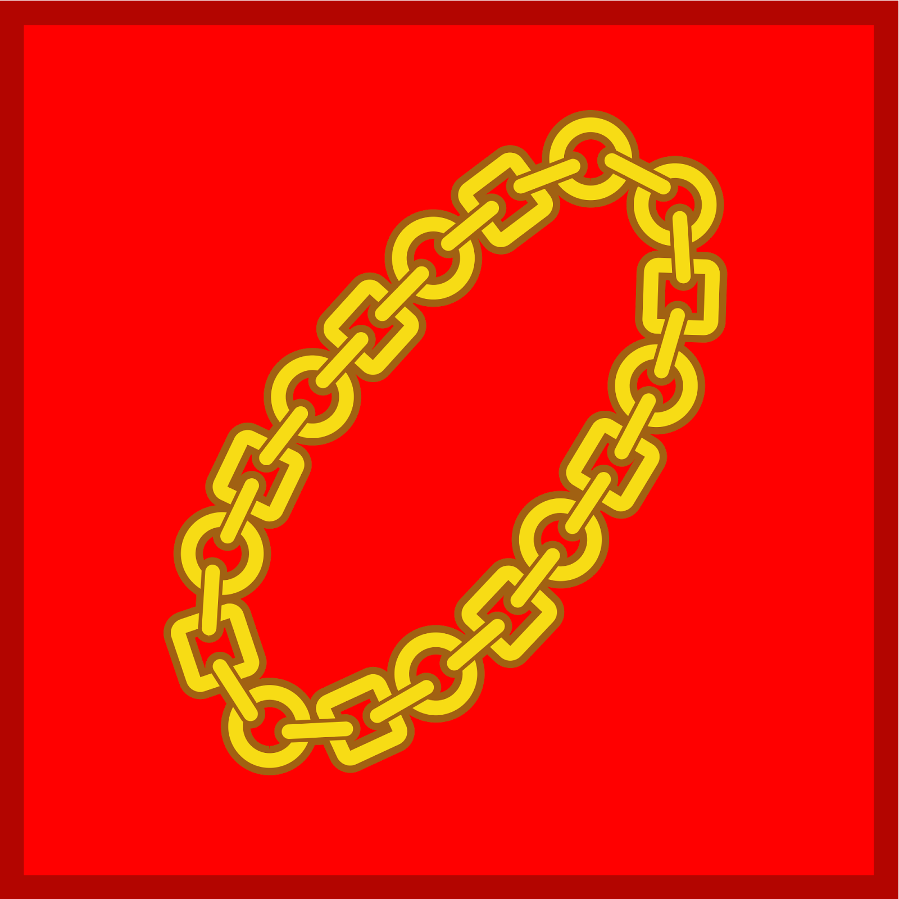

PANCASILA
Ketuhanan Yang Maha Esa

Kemanusiaan Yang Adil dan Beradab
Persatuan Indonesia
Kerakyatan yang dipimpin oleh hikmat kebijaksanaan dalam permusyawaratan perwakilan
Keadilan sosial bagi seluruh rakyat Indonesia